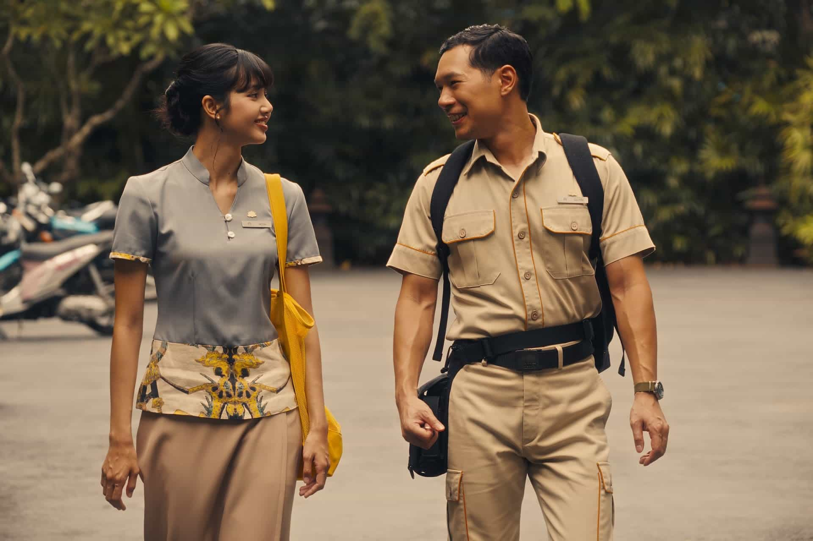

Episode 2: Special Treatments

This episode ran a little tamer than I expected. It feels like we’re still in the midst of the set-up part of the plot, waiting to learn more about each of these characters. I’m still enjoying seeing their character development, but I’m hoping this isn’t too slow of a burn.
As predicted, tensions are building within the group of girl friends. Jaclyn and Kate are trash-talking Laurie, and Laurie and Kate are trash-talking Jaclyn. I wonder who will be on the outs next… It may not come as much of a surprise, but I will say that I think the scripting is just perfect — delivered by hushed voices behind fake smiles. Their interactions feel very real to me, like I know these women. I can’t quite tell who to feel sorry for. At first, I thought Laurie was a clear punching bag, but now I’m not so sure. She’s a bit of a hater in a way that just doesn’t sit right with me. There’s not a definitive answer to which is worse between kicking someone while they’re down or resenting someone while they’re up. It’s all disappointing.
I think we start to get more of a sense of where Mike White is going in this session during Rick’s mediation session with Amrita, who works at the White Lotus. He opens up about his traumatic childhood, and she encourages him to look inward. He doesn’t seem to quite take to these lessons in the way he probably needs to, which I could imagine might be his undoing later on. Wellness is clearly a thread throughout this season, but many of these characters don’t seem interested in taking the proper steps to attain that wellness. It takes more than booking an expensive vacation and a massage.
One of the biggest climaxes of this episode is when two men rob the hotel boutique, and Chelsea is almost caught in the cross-fire. Rick seems completely inept at comforting her, which just reaffirms how one-sided I feel their relationship is. Chelsea takes it like a champ, but she deserves so much better. Rick even tells Chelsea he’s leaving for Bangkok to track down Sritala’s husband, turning a moment that should be about comforting her into a further descent into his own pain.
Things also remain tense with the Ratliffs as Timothy’s phone continues blowing up, Saxon makes crude comments about Piper’s sex life, and Victoria is simply sticking out like a sore thumb. I’m living for her because her accent is hilarious, but she definitely doesn’t seem like she’s learning any lessons this season. I’m curious to see if everything will fall apart for Timothy during the trip, or if he’ll manage to fend off reporters and allegations until the end of their stay.
What I’m most excited about in the next episode is learning more about Greg-Gary, especially after Belinda clocks him. Is she going to realize he killed Tonya? What will she do? I’m dying to know. Hopefully we're not in suspense much longer, but I wouldn’t be surprised if we were.
I’d give this episode a 7/10. I’m still on the hook, but am curious to see if things are going to pick up with the staff at the resort, what Rick is planning, what’s happening with Greg-Gary, etcetera. We’re going to need some more kernels to that effect next week!